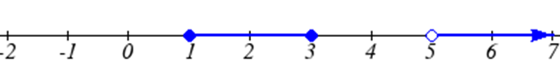
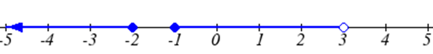
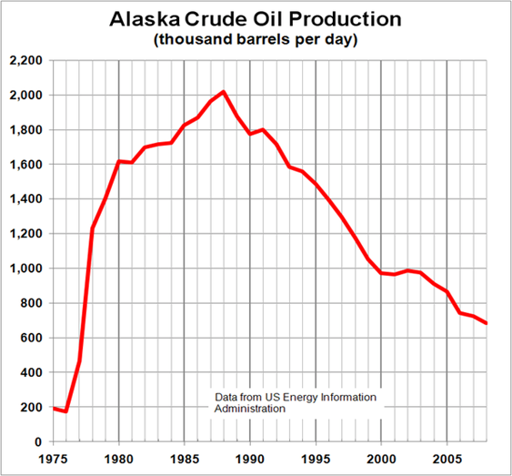
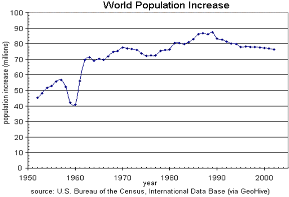

Subsection 1.2.2 Notation
In the previous examples, we used inequalities to describe the domain and range of the functions. This is one way to describe intervals of input and output values, but is not the only way. Let us take a moment to discuss notation for domain and range.
Using inequalities, such as
\(0<c\leq163\text{,}\) \(0<w\leq3.5\text{,}\) and
\(0<h\leq379\) imply that we are interested in all values between the low and high values, including the high values in these examples.
However, occasionally we are interested in a specific list of numbers like the range for the price to send letters,
\(p\) = $0.58, $0.78, $0.98, or $1.18. These numbers represent a set of specific values:
\(\{0.58, 0.78, 0.98, 1.18\}\text{.}\)
Representing values as a set, or giving instructions on how a set is built, leads us to another type of notation to describe the domain and range.
Suppose we want to describe the values for a variable
\(x\) that are 10 or greater, but less than 30. In inequalities, we would write
\(10\leq x<30\text{.}\)
When describing domains and ranges, we sometimes extend this into set-builder notation, which would look like this:
\(\{x|10\leq x<30\}\text{.}\) The curly brackets {} are read as "the set of", and the vertical bar | is read as "such that", so altogether we would read
\(\{x|10\leq x<30\}\) as "the set of
\(x\)-values such that 10 is less than or equal to
\(x\) and
\(x\) is less than 30."
When describing ranges in set-builder notation, we could similarly write something like
\(\{f(x)|0<f(x)<100\}\text{,}\) or if the output had its own variable, we could use it. So for our tree height example above, we could write for the range
\(\{h|0<h\leq 379\}\text{.}\) In set-builder notation, if a domain or range is not limited, we could write
\(\{t|t \text{ "is a real number"}\}\text{,}\) or
\(\{t|t\in R\}\text{,}\) read as "the set of
\(t\)-values such that
\(t\) is an element of the set of real numbers.
A more compact alternative to set-builder notation is interval notation, in which intervals of values are referred to by the starting and ending values. Curved parentheses are used for "strictly less than," and square brackets are used for "less than or equal to." Since infinity is not a number, we can’t include it in the interval, so we always use curved parentheses with
\(\infty\) and
\(-\infty\text{.}\) The table below will help you see how inequalities correspond to set-builder notation and interval notation:
| Inequality |
Set Builder Notation |
Interval Notation |
| \(5<h\leq 10\) |
\(\{h|5<h\leq 10\}\) |
\((5,10]\) |
| \(5\leq h <10\) |
\(\{h|5\leq h <10\}\) |
\([5,10)\) |
| \(5<h<10\) |
\(\{h|5<h<10\}\) |
\((5,10)\) |
| \(h<10\) |
\(\{h|h<10\}\) |
\((-\infty,10)\) |
| \(h\geq 10\) |
\(\{h|h\geq 10\}\) |
\([10,\infty)\) |
| all real numbers |
\(\{h|h\in\mathbb{R}\}\) |
\((- \infty, \infty)\) |
To combine two intervals together, using inequalities or set-builder notation we can use the word "or". In interval notation, we use the union symbol,
\(\cup\text{,}\) to combine two unconnected intervals together.
Example 1.2.5.
Describe the intervals of values shown on the line graph below using set builder and interval notations.

Solution.
To describe the values,
\(x\text{,}\) that lie in the intervals shown above we would say, "
\(x\) is a real number greater than or equal to 1 and less than or equal to 3, or a real number greater than 5."
As an inequality it is:
\(1\leq x\leq 3\) or
\(x>5\) In set builder notation:
\(\{x|1\leq x\leq 3 \text{ or }x>5\}\) In interval notation:
\([1,3]\cup(5,\infty)\)
Remember when writing or reading interval notation: Using a square bracket [ means the start value is included in the set. Using a parenthesis ( means the start value is not included in the set
Checkpoint 1.2.6.
Given the following interval, write its meaning in words, set builder notation, and interval notation.

Subsection 1.2.3 Domain and Range from Graphs
We can also talk about domain and range based on graphs. Since domain refers to the set of possible input values, the domain of a graph consists of all the input values shown on the graph. Remember that input values are almost always shown along the horizontal axis of the graph. Likewise, since range is the set of possible output values, the range of a graph we can see from the possible values along the vertical axis of the graph.
Be careful - if the graph continues beyond the window on which we can see the graph, the domain and range might be larger than the values we can see.
Example 1.2.7.
Determine the domain and range of the graph below.

Solution.
In the graph above, the input quantity along the horizontal axis appears to be "year", which we could notate with the variable
\(y\text{.}\) The output is "thousands of barrels of oil per day", which we might notate with the variable
\(b\text{,}\) for barrels. The graph would likely continue to the left and right beyond what is shown, but based on the portion of the graph that is shown to us, we can determine the domain is
\(1975\leq y\leq 2008\text{,}\) and the range is approximately
\(180\leq b\leq 2010\text{.}\)
In interval notation, the domain would be
\([1975, 2008]\) and the range would be about
\([180, 2010]\text{.}\) For the range, we have to approximate the smallest and largest outputs since they don’t fall exactly on the grid lines.
Remember that, as in the previous example,
\(x\) and
\(y\) are not always the input and output variables. Using descriptive variables is an important tool to remembering the context of the problem.
Checkpoint 1.2.8.
Given the graph below write the domain and range in interval notation
